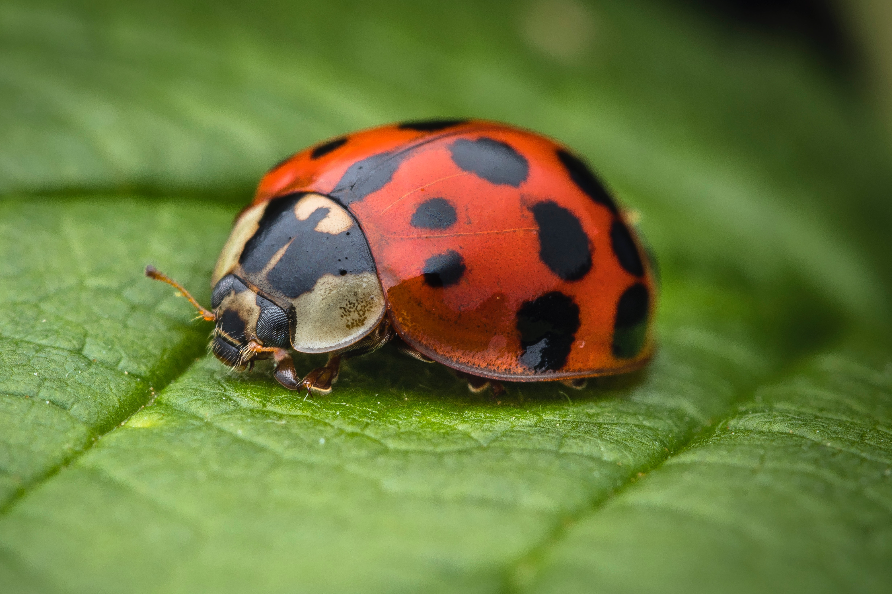

Ladybug
Autonomous Unmanned Skid-Steered Ground Robot "Ladybug", est. 01/26/2022

This was my first serious personal robotics project. My primary goal was to build an autonomous ground robot from scratch (or as close to scratch as I could get!). I learned a LOT and hopefully this documentation can help someone trying to build their own robot from the ground up! Ladybug Documentation Page.
Bullfrog
Autonomous Unmanned Ackermann-Steered Ground Vehicle "Bullfrog", est. 03/09/2023

This project is similar to the Ladybug, but using Ackermann Steering. The goal is to build a robot that can drive quickly and handle a few bumps on the ground. It is in early development and is using an old toy remote control car chassis. I plan to keep updating this documentation as this project progresses. Bullfrog Documentation Page.